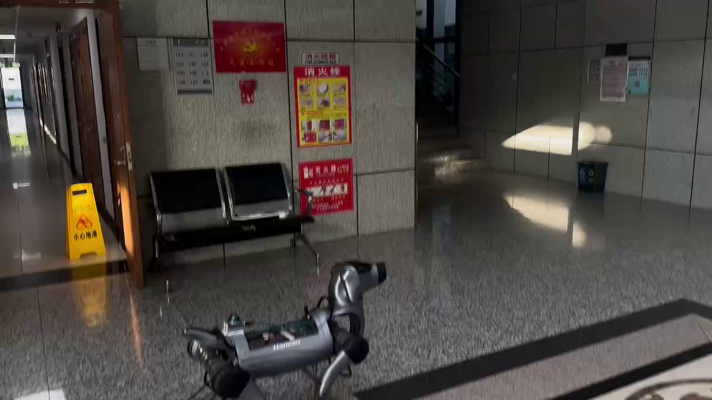
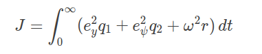

补充横向误差
在航向引导之外加入最近点横向偏差，增强对参考路径的贴合。
专注四足机器人的 SLAM 与导航实机部署，
从场景验证、轨迹跟随优化，到重定位功能实现。

用真实运行记录，呈现算法落地的工作。
覆盖复杂环境、巡检任务与连续功能验证。
PPT 中的 FAST-LVIO2 建图改进结果，以侧视点云呈现 Z 轴方向的建图效果，为实机部署补充地图层面的观察。
面向急弯偏离与路径贴合不足，
联合调整误差定义、控制器与代价函数。
将最近点的横向误差与前瞻点的航向误差结合，根据路径曲率和跟踪状态动态分配权重。

在航向引导之外加入最近点横向偏差，增强对参考路径的贴合。
结合路径几何曲率与跟踪误差曲率；直道小偏离侧重前瞻引导，大偏离加强横向纠偏。
前瞻点沿规划前进方向选取；针对可能出现的摆动、调头，调整航向权重，并联合更新控制器与代价函数。
数值摘自 PPT 对应曲线图，仅反映所示测试记录；未提供统一测试条件及重复实验统计。点击图片可查看原图。
从地图数据准备、候选检索，
到离线匹配分析与结果展示。
建图时同步保存轨迹，建立地图与关键帧位置的关联。
沿轨迹切分大地图，提取关键帧局部点云描述子，构建分块数据库。
将场景特征压缩为一维向量，快速筛除差异较大的候选场景。
比较极坐标与笛卡尔坐标上下文矩阵，计算匹配距离并排序候选地图。
遍历分块数据库并批量计算匹配距离，通过曲线观察候选关键帧；距离越小，描述子越相似。
走廊退化环境、公园及室外巡检、中控与定时任务、返回充电、连续动态避障、建图效果展示。
混合最近点与前瞻点反馈、曲率动态加权、控制器与代价函数更新、S 弯跟随结果对比。
轨迹保存、地图分块、描述子建库、候选检索排序、离线分析与在线运行。